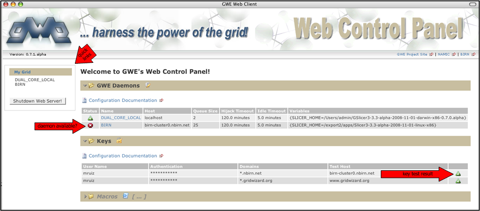
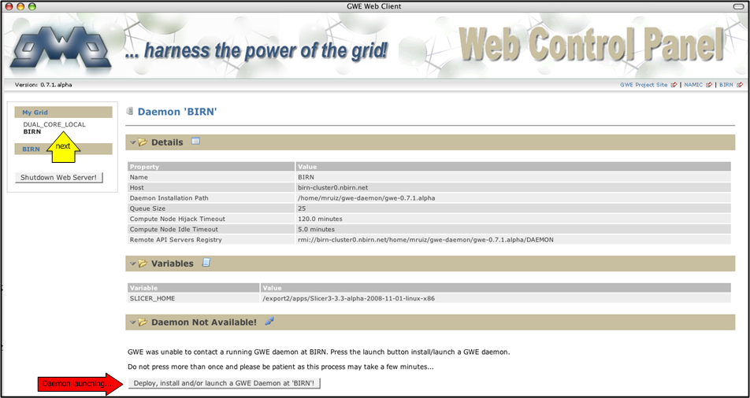
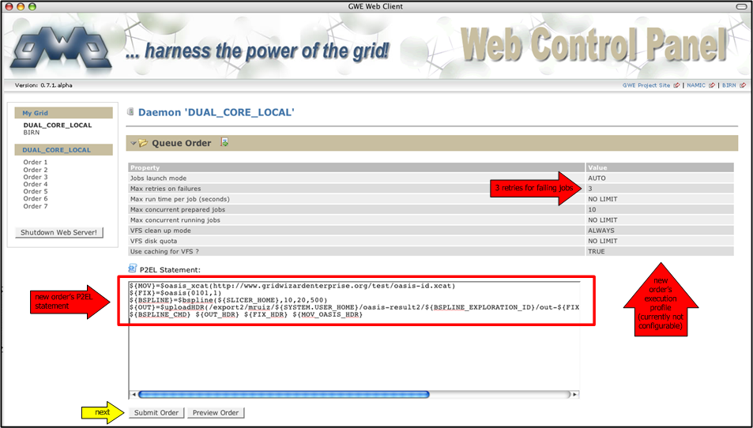
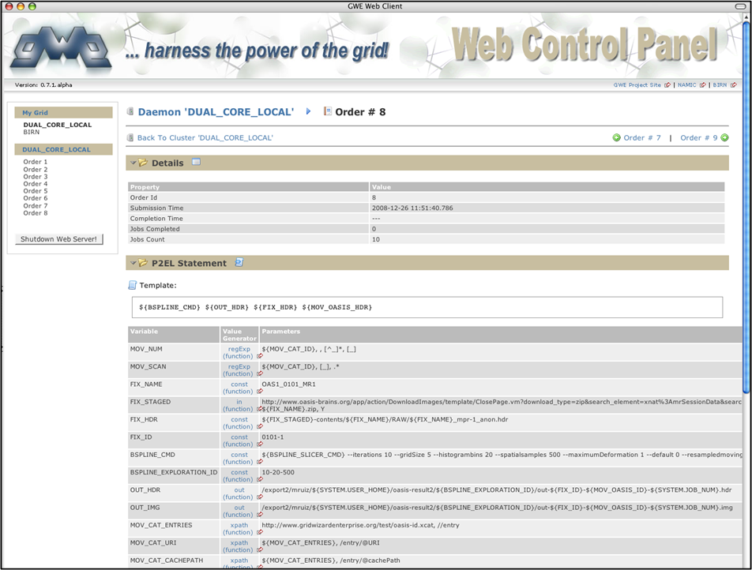

This is a full feature application which runs as a local web server allowing the user to interact with it through any web browser. The web server acts as a proxy to the GWE system by carrying on the user's request: installing and/or launching new GWE daemons, contacting already deployed ones, queuing new orders in selected daemon, checking the status of orders and jobs, standard outputs and exceptions, internal configuration, etc.
This application is launched by invoking:
$GWE_HOME/bin/gwe-web.sh [IP_PORT_WHERE_TO_RUN_WEB_SERVER] [OPTIONAL_CONFIG_PARAM]
Thereafter you can use a web browser of your choice and connect to this web application by accessing the URL:
http://localhost:[IP_PORT_WHERE_TO_RUN_WEB_SERVER]
And you should get a page like this (expanded daemons and keys, collapsed macros):

(collapsed daemons and keys, expanded macros):
Following the "next" arrow you would get a page like the following summarizing the details of the BIRN cluster:

You can equally get a summary for any other cluster registered in your Grid Descriptor File
(ie. GWE's local machine virtual cluster):
To queue an order in a particular daemon you can follow the link provided in its respective cluster details page and in the resulting queue order page input the P2EL statement and press the "Submit Order" button:

thereafter the order will be queued and processed accordingly.
At this point you could exit this application and leave the daemon to work on it. Later you can relaunch this application to continue with the following steps to check the execution progress of this order.
You may follow any of the links to the new order to check its execution progress:

you can collapse sections to read jobs summary table...
Notice that GWE keeps track of jobs that fail to execute...
... and will retry their execution (if the order's profile indicates so) after giving a chance to all other pending jobs:
At any time you can check the status of each individual job within an order as well...
... and inspect each execution (ideally only one - more only if previous execution(s) failed):
Finally after done with the client we need to shut it down and disconnect it from the daemons by pressing the "Shutdown
" button...
... at that point we are done using the GWE Web Control Panel:
Remember that this does not stop your GWE daemons: they stay alive executing any pending orders/jobs and listening for incoming client connections so you can reconnect to them at a future time to carry on any of the previous tasks.